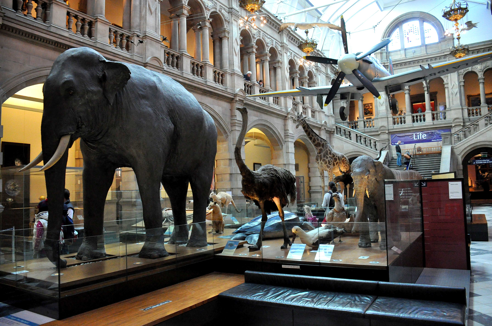
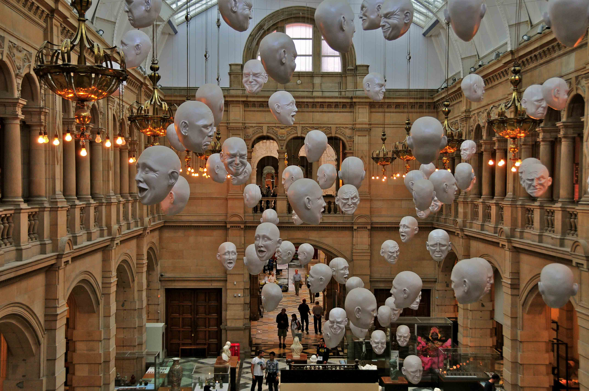

Kelvingrove Art Gallery and Museum
Kelvingrove Museum opened in 1901 and is a firm favourite with local people and visitors. It has stunning architecture and a family friendly atmosphere. Explore its 22 galleries and discover everything from art to animals, Ancient Egypt to Charles Rennie Mackintosh and so much more. There is also have a changing programme of temporary exhibitions and displays. Enjoy an organ recital, a free tour or at weekends and holidays take part in one of our family activities.